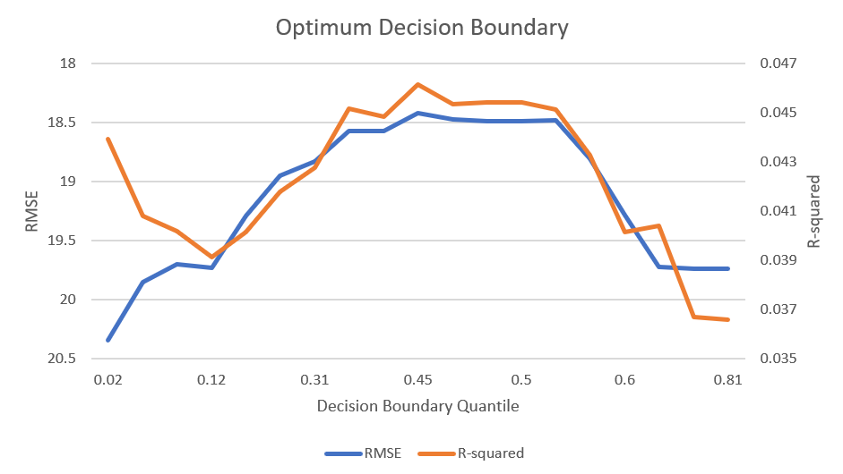

I created a custom K Nearest Neighbor algorithm in R that uses the euclidean distance between each pair of industries, as generated using the multi-dimensional matrix from here. Rather than simply taking the average number of employees for the K nearest neighbors - a very common approach - I weight the number of employees by distance for the nearest neighbors within a given radius or decision boundary.
In order to create an optimal decision boundary, I optimize the analysis by running it repeatedly using different quantiles for distance. In short, I want to to find the maximum r-squared for the minimum root mean squared error (RMSE). For each iteration, I include all connections within the decision boundary. The number of industries without any connection will negatively affect my r-squared, but excluding these outliers also positively affects my RMSE. It's a tradeoff.
Of note, the r-squared is very low. That's because we're using the multi-dimensional matrix, rather than simply using the matrix based on Employment. Remember, the extra information about similarity of occupation composition and inputs/outputs was not correlated with employment. If we use only the employment matrix, and only measure the r-squared for industries within the decision boundary, the r-squared bounces up over .6. We also see the same bell-curve shape from above when comparing r-squared and RMSE. That being understood, if our goal is to predict employment in the future, we should just use the linear estimate and not worry about the network analysis. To the contrary, we are trying to measure something very different. In turn, the low r-squared is acceptable. We are measuring "what could happen", which should be much noisier.
My goal is to eventually make my Github repository public, so that other people can play with the code. While the research is under development, I will keep the repository invite only. Feel free to contact me to request an invite.